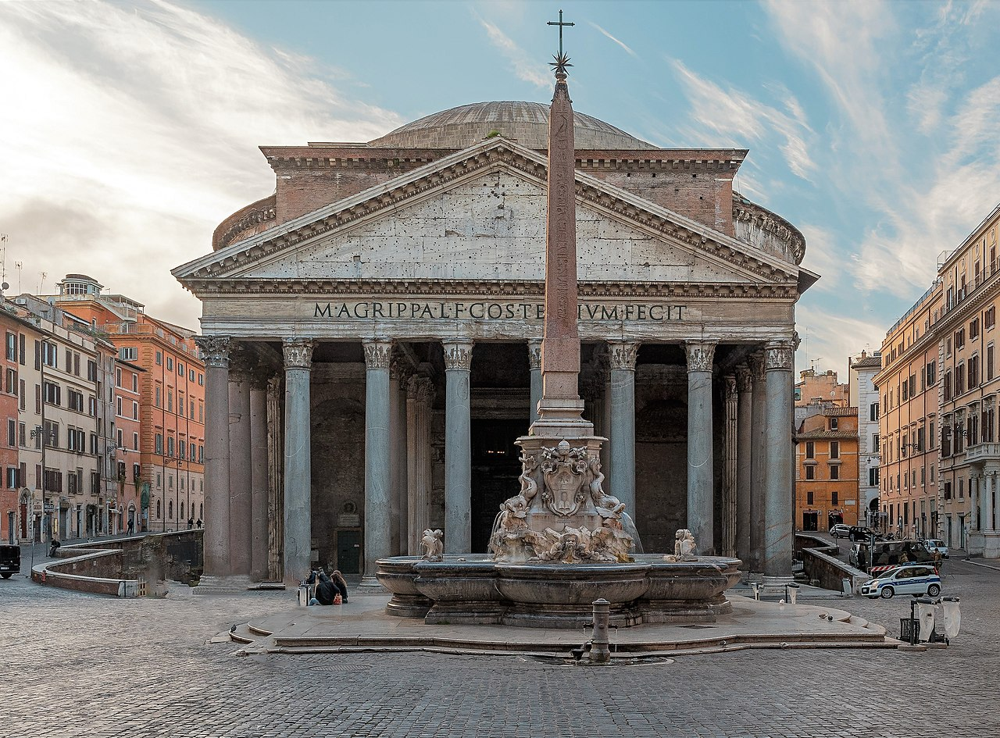
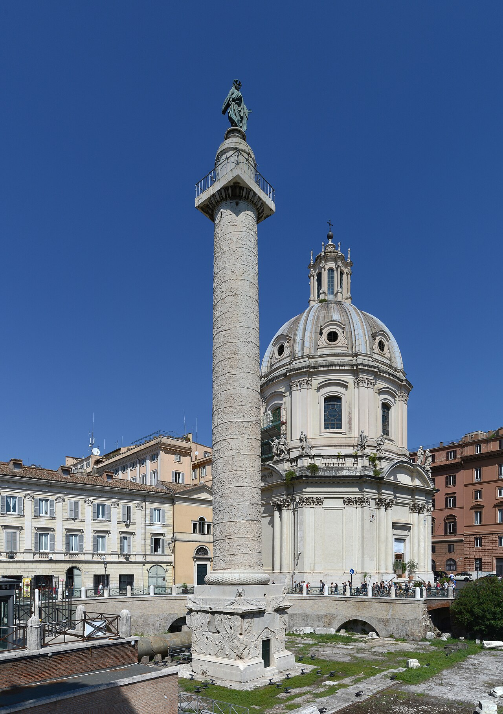
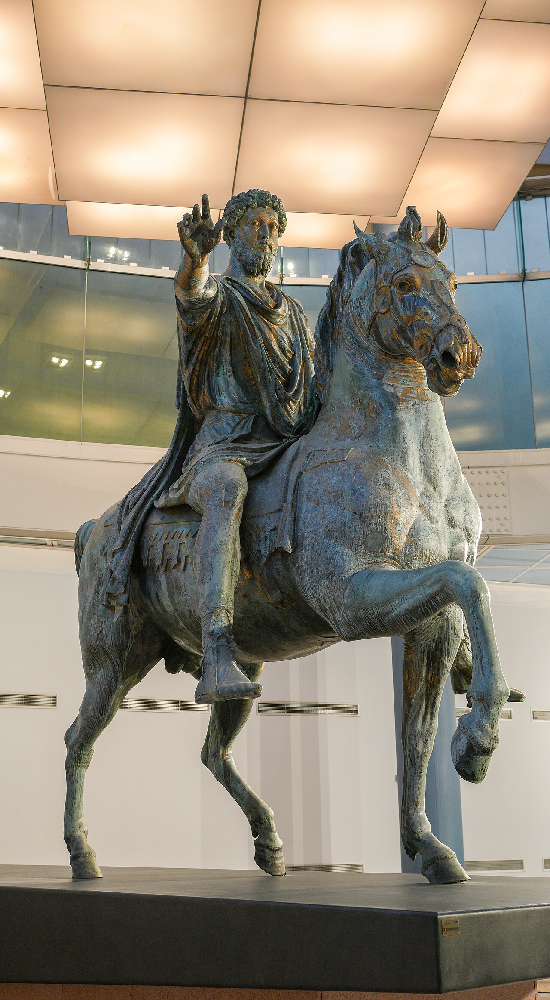
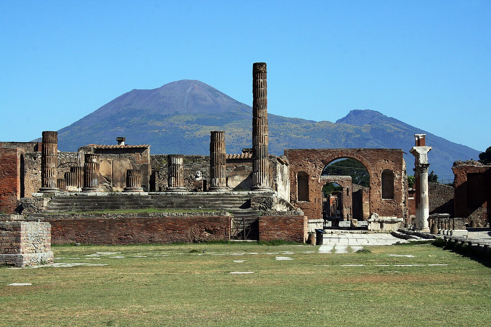
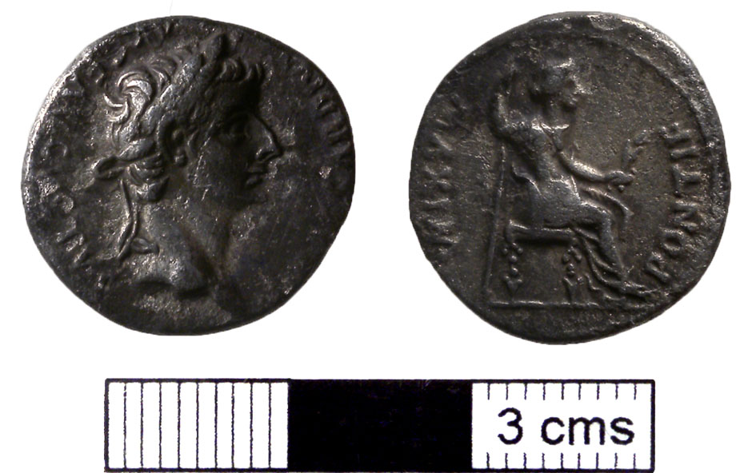

🏆 Meesterwerk: Het Colosseum
Het grootste amfitheater ooit gebouwd - symbool van Romeinse macht en techniek

Rome, 70-80 n.Chr. · Vespasianus en Titus
🎨 STIJLFIGUREN & THEMA'S
🖼️ Realisme
Portretten: Echte rimpels, littekens, ouderdom. Geen idealisering zoals Grieken.
✨ Materialen
Beton: Romeinse uitvinding. Maakte enorme constructies mogelijk.
🏛️ Architectuur
Innovatie: Boog, koepel, beton. Nuttige gebouwen: aquaducten, baden, wegen.
📖 Propaganda
Triomfbogen: Vier overwinningen, legitimeer keizers. Kunst als politiek instrument.
🎭 Copieën
Griekse meesters: Romeinen kopieerden Griekse beelden. Meeste Griekse kunst bekend via Romeinse kopieën.
📊 Schaal
Monumentaal: Alles groter, meer, indrukwekkender. Imperium als maatstaf.
🎯 Centrale Thema's
- Keizercultus: De keizer als goddelijk figuur, afgebeeld in tempels
- Militaire glorie: Overwinningen, veroveringen, legioenen
- Nutsbouwkunst: Aquaducten, wegen, badhuizen - kunst in dienst van het volk
- Realisme: Individuele portretten, niet geïdealiseerd
- Erfenis: Griekse kunst overgenomen en aangepast
🖼️ TOP 10 MEEST INVLOEDRIJKE WERKEN
1. Het Colosseum (70-80 n.Chr.)
Rome · Vespasianus en Titus · Amfitheater
Achtergrond: Het grootste amfitheater ooit gebouwd. 50.000-80.000 toeschouwers. Gladiatorengevechten, dierengevechten, executes.
🔍 STIJLANALYSE
Beton: Romeinse uitvinding maakte dit mogelijk. 80 ingangen, 4 verdiepingen.
Ordes: Dorisch beneden, dan Ionisch, Korinthisch boven. Hiërarchie in steen.
Doel: Brood en spelen - politieke controle door entertainment.
2. Pantheon (118-128 n.Chr.)
Rome · Hadrianus · Tempel voor alle goden

Achtergrond: Best bewaarde Romeinse gebouw. later kerk. Koepel was 1300 jaar de grootste ter wereld.
🔍 STIJLANALYSE
Koepel: 43 meter diameter, oculus van 8,9 meter. Licht als goddelijk symbool.
Beton: Lichter materiaal naar boven. Ingenieuze techniek.
Harmonie: Cirkel en rechthoek perfect verenigd.
3. Augustus van Prima Porta (ca. 20 v.Chr.)
Vaticaanse Museen, Rome · Marmer · 2,03 meter

Achtergrond: Portret van keizer Augustus als idealiseerde heerser. Gevonden bij de villa van Livia.
🔍 STIJLANALYSE
Doryphoros-pose: Gebaseerd op Polykleitos. Griekse idealen + Romeinse portretkunst.
Cuiras: Harnas met religieuze en politieke symbolen. Parthen gevangenen.
Propaganda: Jong en krachtig, hoewel Augustus toen 76 was.
4. Zuil van Trajanus (113 n.Chr.)
Rome · Apollodorus van Damascus · 38 meter hoog

Achtergrond: Viert Trajanus' overwinning op de Daciërs. 2500 figuren in spiraalvormig reliëf.
🔍 STIJLANALYSE
Narratief: Verhaal van de oorlog van beneden naar boven. Als een stripverhaal.
Detail: Schepen, bruggen, veldslagen, Trajanus verschijnt 59 keer.
Functie: As van Trajanus in de basis, gouden standbeeld bovenop (nu Sint-Pieter).
5. Laocoöngroep (Romeinse kopie, ca. 25 v.Chr.)
Vaticaanse Museen, Rome · Marmer

Achtergrond: Romeinse kopie van Grieks origineel. Gevonden in 1506, grote invloed op Renaissance.
🔍 STIJLANALYSE
Hellenistisch: Dramatische pijn, spieren gespannen, mond open.
Compositie: Piramidaal, drie figuren verbonden door slangen.
Erfenis: Belangrijkste beeldhouwwerk voor Michelangelo en zijn tijdgenoten.
6. Equestrian Standbeeld van Marcus Aurelius (ca. 176 n.Chr.)
Capitoline Musea, Rome · Brons · 4,24 meter

Achtergrond: Enige overgebleven Romeinse ruiterstandbeeld. Overleefde omdat men dacht dat het Constantijn was.
🔍 STIJLANALYSE
Verhoudingen: Paard kleiner dan echt voor evenwicht. Keizer dominant.
Gebaar: Rechterhand uitgestrekt - clementia (genade) naar onderworpen vijand.
Filosofische keizer: Baard, nadenkende blik. Stoïcijn op paard.
7. Pont du Gard (ca. 50 n.Chr.)
Nîmes, Frankrijk · Aquaduct · 49 meter hoog

Achtergrond: Aquaduct dat water bracht naar Nîmes. 50 km lang, 200.000 m³ water per dag.
🔍 STIJLANALYSE
Engineering: Val van slechts 17 meter over 50 km. Precisie zonder moderne instrumenten.
Esthetiek: Drie niveaus bogen, verhouding 6:4:1. Praktisch én mooi.
Gebruik: Geen mortel tussen stenen - alleen wrijving houdt het bijeen.
8. Boog van Constantijn (315 n.Chr.)
Rome · Triomfboog · 21 meter hoog

Achtergrond: Viert Constantijns overwinning op Maxentius. Gemaakt met onderdelen van eerdere monumenten.
🔍 STIJLANALYSE
Spolia: Hergebruikte beelden van Trajanus, Hadrianus, Marcus Aurelius.
Overgang: Klassieke stijl (gestolen) vs. late Romeinse stijl (nieuwe reliëfs).
Christendom: Constantijn legaliseerde het christendom (313). Begin van nieuwe tijd.
9. Fresco's uit Pompeï (1e eeuw n.Chr.)
Pompeï, Italië · Muurschilderingen

Achtergrond: Pompeï bedolven door Vesuvius (79 n.Chr.). Fresco's bewaard door as.
🔍 STIJLANALYSE
Vier stijlen: Incrustatie, architecturaal, ornamenteel, fantastisch.
Onderwerpen: Mythologie, stillevens, portretten, landschappen.
Ilusionisme: Geschilderde ramen, tuinen, architectuur. Ruimte vergroten.
10. Standbeeld van Junius Brutus (ca. 300 v.Chr.)
Capitoline Musea, Rome · Brons · Etruskisch/Romeins

Achtergrond: Een van de vroegste Romeinse portretbustes. Mogelijk Lucius Junius Brutus, stichter van de Republiek.
🔍 STIJLANALYSE
Verisme: Realistische weergave van gezicht - rimpels, harde blik.
Etruskisch: Invloed van Etruskische bronstechniek en stijl.
Politiek: De Republiek - geen koningen, senaat regeert. Ernst en autoriteit.
📚 TIJDSGEEST CONTEXT (500 v.Chr. - 500 n.Chr.)
🌍 POLITIEK PERSPECTIEF
De Romeinse kunst ontwikkelde zich binnen een politiek systeem dat over duizend jaar evolueerde van koninkrijk (753-509 v.Chr.) via republiek (509-27 v.Chr.) naar keizerrijk (27 v.Chr.-476 n.Chr.). Elke fase bracht zijn eigen artistieke behoeften, patronage-systemen en ideologische functies voor kunst met zich mee, waardoor Romeinse kunst niet één homogene stijl was maar een dynamisch spectrum van aanpassingen aan veranderende politieke omstandigheden.
De Republiek (509-27 v.Chr.) werd gekenmerkt door een uniek constitutioneel evenwicht (mixt constitution) tussen senaat, magistraten (consuls, praetors, censors) en volksvergaderingen (comitia). Deze politieke cultuur van competitie tussen aristocratische families (nobilitas) stimuleerde openbare kunst als middel om prestige te verwerven in een systeem zonder officiële salarissen voor staatsfunctionarissen. De cursus honorum - de sequentie van openbare ambten die ambitieuze mannen beklommen - vereiste zichtbare demonstraties van publieke dienst: triomfbogen, tempels, standbeelden, basilica's vierden individuele prestaties in dienst van de staat. De generaal die een triomftocht (triumphus) ontving, paradeerde door Rome met buit, gevangenen en kunstwerken, en bouwde vaak een tempel of monument om zijn overwinning te herdenken. Deze competitieve euergesia (welwillendheid) verklaart waarom de Romeinse Republiek zo rijk was aan openbare monumenten, zelfs zonder centrale keizerlijke opdrachtgever.
Veristische Portretten uit de Republikeinse periode weerspiegelden deze politieke cultuur. De bustes van oudere mannen - rimpels, diepe plooien, kale hoofden, strenge blikken - toonden niet fysieke schoonheid maar politieke autoriteit: wijsheid opgedaan door jaren van publieke dienst, ernst passende bij de verantwoordelijkheden van leiderschap, individualiteit die de republikeinse waarde van distinct persoonlijkheid benadrukte. Deze portretten stonden in openbare ruimtes, tempels, en family atria, waar ze herinnerden aan de voortdurende aanwezigheid van voorouders (imagines) en de verplichtingen van afkomst.
De Overgang naar Keizerrijk (27 v.Chr.) bracht een fundamentele transformatie van het politieke systeem en de rol van kunst. Na decennia van burgeroorlogen - Marius versus Sulla (88-82 v.Chr.), Caesar versus Pompeius (49-45 v.Chr.), Octavianus versus Antonius (32-30 v.Chr.) - accepteerde de senaat Octavianus als "princeps" (eerste burger) met de titel "Augustus" (de verhevene). Hoewel Augustus de republikeinse instituties formeel behield, concentreerde hij alle werkelijke macht in zijn persoon: imperium proconsulare (commando over alle legioenen), tribunicia potestas (vetorecht), pontifex maximus (hoofd van staatsreligie). Deze nieuwe realiteit vereiste een nieuwe kunstpolitiek: de keizer werd de belangrijkste opdrachtgever, kunst diende ter legitimatie van zijn heerschappij en de belofte van stabiliteit na decennia van chaos.
Augusteïsche Propaganda gebruikt kunst systematisch als politiek instrument. De Ara Pacis Augustae (Vredesaltaar, 13-9 v.Chr.) vierde Augustus' vestiging van de Pax Romana met reliëfs van de keizerlijke familie, mythologische scènes, en allegorische figuren van vrede en vruchtbaarheid. De Augustus van Prima Porta (ca. 20 v.Chr.) toonde de keizer als idealiseerde heerser in de traditie van Polykleitos' Doryphoros, maar met een cuirasse die diplomatieke en militaire overwinningen verbeeldde, en met Cupido aan zijn voet die zijn afstamming van Venus claimde. Het Forum van Augustus met de Tempel van Mars Ultor (Mars de Wreker) herdacht de slag bij Philippi (42 v.Chr.) waar Augustus de moordenaars van Caesar versloeg. Augustus' slogan "Ik vond Rome een stad van baksteen en liet het een stad van marmer achter" verwees naar zijn enorme bouwprogramma dat niet alleen fysieke maar ook politieke transformatie symboliseerde.
Het Principaat (27 v.Chr.-284 n.Chr.) ontwikkelde een systeem van keizerlijke opdrachtgeverschap dat de kunstproductie domineerde. De keizer en zijn familie waren de grootste patrons: Nero bouwde zijn Domus Aurea (Gouden Huis) met 300 kamers en een kolossaal standbeeld van zichzelf; Vespasianus gaf het Colosseum (70-80 n.Chr.) aan het volk als vervanging voor Nero's privé-paleis; Trajanus (98-117 n.Chr.) bouwde zijn Forum met de Zuil die zijn Dacische oorlogen verbeeldde in 2500 figuren; Hadrianus (117-138 n.Chr.) herbouwde het Pantheon en zijn villa in Tivoli met architectonische experimenten. Triomfbogen - van Titus (81 n.Chr.), Septimius Severus (203 n.Chr.), Constantijn (315 n.Chr.) - fungeerden als propagandistische poorten die voorbijgangers herinnerden aan keizerlijke overwinningen en goddelijke gunst.
Pax Romana en Imperial Ideology vereisten kunst die de eenheid van het imperium uitdrukte. Het Romanum imperium was een multinational state dat diverse culturen omvatte - Grieken, Egyptenaren, Galliërs, Syriërs, Britten, Noord-Afrikanen - maar allen werden onderworpen aan Roman law en genoten Roman peace. De kunst weerspiegelde deze universaliteit: Griekse stijlen werden aangepast voor Romeinse doeleinden, lokale tradities werden geassimileerd in een kosmopolitische visuele taal. De keizercultus, waarbij overleden keizers werden vergoddelijkt (divus) en levende keizers als goddelijk werden vereerd (dominus et deus), vereiste tempels, standbeelden, altaren en rituelen die de hele bevolking bonden aan het regime. In elke provinciestad stond een tempel voor de Roma et Augustus, waar burgers offers brachten en hun loyaliteit demonstreerden.
Het Leger als Kunstpatronage weerspiegelde de militaire basis van Romeinse macht. De legioenen aan de grenzen (Rijn, Donau, Eufraat) beschermden een rijk van 5 miljoen km² met 60-70 miljoen inwoners. De Zuil van Trajanus verhaalde in spiraalvormig reliëf de Dacische oorlogen (101-106 n.Chr.) met ongekende detail: Romeinse soldaten bouwen bruggen, vestingen, marcheren door bergen, vechten tegen Daciërs, ontvangen overgaves. De Tropaeum Traiani in Adamclisi (Roemenië) toonde de realiteit van grensoorlogen. De Adamklissi Metopen toonden Romeinse en barbaarse figuren in strijd, in een stijl die rauwer en directer was dan het verfijnde classicisme van Rome - kunst voor soldaten, niet voor senatoren.
Crisis en Transformatie (193-476 n.Chr.) brachten politieke fragmentatie die de kunst veranderde. De 3e eeuw zag de Crisis van het Derde Eeuw (235-284): 26 keizers in 50 jaar, burgeroorlogen, economische collaps, barbaarse invasies, de opkomst van het Sassanidische rijk in Perzië. De kunst werd expressiever, abstracter, meer gefocust op keizerlijke autoriteit dan op klassieke schoonheid. De Tetrarchie van Diocletianus (293) verdeelde het rijk onder vier heersers, wat nieuwe iconografie vereiste: groepen van vier keizers in identieke, onindividuele gedaanten (zoals het Porfyren Tetrarchen-standbeeld in Venetië). Constantijn de Grote (306-337) centraliseerde macht opnieuw, stichtte Constantinopel (330) als nieuwe hoofdstad, en legaliseerde het christendom (Edict van Milaan, 313). De Boog van Constantijn (315) combineerde klassieke spolia (hergebruikte beelden van Trajanus, Hadrianus, Marcus Aurelius) met late-Romeinse reliëfs die een nieuwe, meer abstracte stijl toonden.
De Val van het West-Romeinse Rijk (476 n.Chr.) betekende het einde van de politieke eenheid van het Middellandse Zeegebied. De splitsing tussen Oost en West (395) had twee aparte ontwikkelingspaden gecreëerd: het Westen, verzwakt door economische decline, militaire druk, en politieke fragmentatie, viel voor Germaanse koninkrijken; het Oosten, rijker, urbaner, en beter verdedigd, overleefde als Byzantijnse rijk nog 1000 jaar. De kunst die voortkwam uit deze politieke transformatie - vroeg-christelijk, Byzantijns, en uiteindelijk middeleeuws - zou nieuwe vormen, functies en ideologieën ontwikkelen, maar bleef schatplichtig aan de Romeinse erfenis van technische virtuositeit, monumentale schaal, en politieke functionaliteit.
📖 LITERAIR PERSPECTIEF
Romeinse literatuur begon, net als Romeinse kunst, met schatplichtigheid aan Griekenland. Livius Andronicus, een Griekse slaaf uit Tarentum, vertaalde rond 240 v.Chr. Homerus' Odyssee in Saturnische verzen - het begin van Latijnse poëzie. Deze vertaaltraditie zette zich voort: Naevius vertaalde Griekse tragedies, Ennius introduceerde de hexameter, Plautus en Terentius adapteerden Griekse komedies (Menander). Maar zoals Horatius schreef: "Gevangengenomen Griekenland nam zijn wrede overwinnaar gevangen en bracht de kunsten naar landelijk Latium." (Epistulae 2.1.156) - Romeinen erkenden hun culturele schuld maar transformeerden Griekse vormen tot iets uniek Romeins.
De Gouden Eeuw (70 v.Chr.-14 n.Chr.) bracht een bloei van Latijnse literatuur die eeuwenlang de standaard zou vormen. De late Republiek zag Cicero (106-43 v.Chr.) - redenaar, filosoof, staatsman - wiens toespraken, brieven en filosofische traktaten de klassieke Latijnse stijl definieerden. Zijn catilinarische oraties, die de samenzwering van Catilina blootlegden, demonstreerden de kracht van rhetorica als politiek wapen. Caesar (100-44 v.Chr.) schreef zijn Commentarii de Bello Gallico - oorlogsverslagen die propagandistisch maar ook literair verfijnd waren, geschreven in de derde persoon om objectiviteit te suggereren. Catullus (84-54 v.Chr.) ontwikkelde liefdespoëzie van intense persoonlijke emotionele expressie.
Vergilius' Aeneïs (29-19 v.Chr.) werd het nationale epos van Rome, gecommissioneerd door Augustus als cultureel fundament van het nieuwe regime. Het verhaal volgde Aeneas, Trojaanse held en mythische voorvader van de Julian familie (waartoe Julius Caesar en Augustus behoorden), op zijn reis van brandend Troje naar Italië waar hij de stamvader werd van het Romeinse volk. De epische structuur imiteerde Homerus - de eerste zes boeken echoën de Odyssee (zwervingen), de laatste zes de Ilias (oorlog) - maar met een Romeinse ideologie van pietas (plichtsgetrouwheid aan goden, familie, staat) boven Griekse individualistische heldenmoed. De beroemde scène waarin Aeneas zijn vader Anchises op zijn rug draagt en zijn zoon Ascanius aan de hand leidt tijdens de vlucht uit Troje werd een terugkerend thema in Romeinse kunst, symbolisch van drie generaties en de continuïteit van Romeinse waarden. Vergilius' vierde boek - de tragedie van Dido, koningin van Carthago, die zelfmoord pleegt nadat Aeneas haar verlaat uit plicht - bood een van de meest emotioneel krachtige verhalen uit de oudheid, eeuwenlater herwerkt door Purcell en Berlioz.
Horatius (65-8 v.Chr.) schreef Odes, Epoden, Satiren, en Epistels die de perfectie van lyrische poëzie in Latijn vertegenwoordigden. Zijn Carmen Saeculare (Seculaire Hymne) werd uitgevoerd bij de Seculaire Spelen van 17 v.Chr., een staatsgebeurtenis die de nieuwe gouden eeuw van Augustus vierde. Zijn beroemde uitspraak "Dulce et decorum est pro patria mori" ("Zoet en passend is het voor het vaderland te sterven") vatte de Romeinse ideologie van zelfopoffering samen. Ovidius (43 v.Chr.-17 n.Chr.) schreef de Metamorfosen, een episch gedicht van 15 boeken dat de geschiedenis van de wereld van schepping tot de apotheose van Julius Caesar vertelde via transformatieverhalen uit de Griekse en Romeinse mythologie - meer dan 250 mythen die de belangrijkste bron vormden voor mythologische thema's in Romeinse kunst. Zijn Ars Amatoria (Kunst der Liefde), een ironische handleiding voor verleiding, werd door Augustus verboden en leidde tot Ovidius' ballingschap naar Tomis (het huidige Constanța in Roemenië).
Historiografie vormde een belangrijk genre dat direct verband hield met visuele kunst. Livius (59 v.Chr.-17 n.Chr.) schreef Ab Urbe Condita (Van de stichting van de stad), een geschiedenis van Rome in 142 boeken (waarvan 35 bewaard) die de republikeinse deugden van vroeger tijd vierde als spiegel voor het heden. Tacitus (56-120 n.Chr.) analyseerde in zijn Annales en Histories de keizers van Tiberius tot Domitianus met cynische scherpzinnigheid, en in zijn Germania beschreef hij de Germaanse stammen als contrasterend met Romeinse corruptie. De Zuil van Trajanus fungeerde als visuele geschiedschrijving die dezelfde gebeurtenissen vierde die literair werden vastgelegd in traanen en panegyrieken.
De Zilveren Eeuw (14-138 n.Chr.) zag verdere ontwikkeling ondanks politieke restricties. Seneca (4 v.Chr.-65 n.Chr.), stoïcijns filosoof en tutor van Nero, schreef tragedies (Medea, Phaedra, Thyestes) die Griekse mythen herwerkten met intense psychologische en rhetorische kracht - invloedrijk voor latere dramatische tradities van Shakespeare tot Racine. Zijn brieven en dialogen beïnvloedden vroeg-christelijke denkers. Petronius' (†66 n.Chr.) Satyricon bood een satirisch, fragmentarisch beeld van Romeinse samenleving met het beroemde "Feest van Trimalchio" - een parodie op nieuw-rijk gedrag. Juvenalis' (1e-2e eeuw) Satiren bekritiseerden Romeinse morele decline met bittere invectie. Statius (45-96 n.Chr.) schreef de Thebais (epos over de zeven tegen Thebe) en Silvae (gelegenheidsgedichten). Martial (40-104 n.Chr.) perfectioneerde het epigram - korte, scherpe gedichten vaak met satirische of obscene inhoud.
Rhetorica en Educatie waren centraal in Romeinse cultuur en beïnvloedden visuele kunst. De opleiding van elitejongens omvatte grammatica, dialectiek, en vooral rhetorica - de kunst van overtuigend spreken die essentieel was voor juridische en politieke carrières. De Progymnasmata (voorlopende oefeningen) omvatten beschrijving (ekphrasis) - het levendig beschrijven van personen, plaatsen, of kunstwerken. Deze rhetorische traditie van beschrijving beïnvloedde hoe kunst werd ontworpen om verhalen te vertellen: de narratieve reliëfs op de Zuil van Trajanus fungeerden als visuele ekphraseis, en literaire beschrijvingen van kunstwerken (zoals de beroemde beschrijving van de Laocoöngroep in Eneïs 2) toonden de wederzijdse beïnvloeding van tekst en beeld.
Vitruvius' De Architectura (ca. 30-15 v.Chr.) was het enige overgebleven architectuurtraktaat uit de oudheid, opgedragen aan Augustus. De tien boeken bespraken stadsplanning, tempelontwerp, openbare gebouwen, private huizen, materialen, waterwerken, zonnewijzers en machines. Vitruvius' nadruk op firmitas, utilitas, venustas (sterkte, nut, schoonheid) als de drie principes van architectuur, en zijn discussie van de klassieke ordes (Dorisch, Ionisch, Korinthisch) werden canonicus voor de Renaissance toen het traktaat in 1414 werd herontdekt. Leonardo da Vinci's "Vitruvius-man" illustreerde Vitruvius' beschrijving van de menselijke proporties als model voor architecturale verhoudingen.
Christelijke Literatuur ontwikkelde zich parallel met en uiteindelijk in competitie met klassieke tradities. In de 1e eeuw ontstonden de Evangeliën (Marcus ca. 70, Matteüs en Lucas ca. 80-90, Johannes ca. 90-95), de brieven van Paulus (50s-60s), en andere nieuwtestamentische geschriften in het Koinè-Grieks. De 2e en 3e eeuw zagen apologetische werken (verdedigingen van het christendom) van Justinus Martyr, Tertullianus, Origenes, en latijnse theologen. In de 4e eeuw, na het Edict van Milaan (313), explodeerde christelijke literatuur: Eusebius' kerkgeschiedenis, Hieronymus' Vulgaat-bijbelvertaling (382-405), Augustinus' Confessiones (397-400) en De Civitate Dei (413-426). Het Latijn van de kerk - vereenvoudigd, beïnvloed door bijbelse stijl - werd de basis voor middeleeuws Latijn. De overgang van klassieke naar christelijke literatuur weerspiegelde de transformatie van de Romeinse wereld: van polytheïstische, politiek-georiënteerde cultuur naar monotheïstische, religieus-georiënteerde beschaving.
Literatuur en Visuele Kunst waren onlosmakelijk verbonden in de Romeinse wereld. Mythen uit Ovidius' Metamorfosen werden afgebeeld op fresco's (Pompeï), sarkofagen, mozaïeken, en vaasschilderingen. Scènes uit de Aeneïs verschenen op reliëfs en schilderingen. Historische werken inspireerden triomfmonumenten. De keizerlijke panegyrieken (lofredenen) boden teksten die in steen werden vertaald. En omgekeerd inspireerden kunstwerken literaire beschrijvingen. Deze intertextualiteit tussen woord en beeld creëerde een rijke visuele cultuur waarin geletterde elites de mythen en verhalen konden lezen die in openbare en private kunstwerken werden afgebeeld.
🧠 PSYCHOLOGISCH PERSPECTIEF
De Romeinse geest werd gekenmerkt door een unieke combinatie van pragmatisme, juridische denkwijze, en praktische gerichtheid die fundamenteel verschilde van de Griekse nadruk op theorie, contemplatie en esthetiek. Waar Grieken waarde hechtten aan abstracte ideeën en filosofische speculatie, waardeerden Romeinen concrete toepassing, zichtbaar resultaat en maatschappelijk nut. Deze psychologische oriëntatie - het "Romeinse karakter" dat historici van Polybius tot Gibbon hebben beschreven - vormde de basis voor Romeinse kunst die functioneel, representatief en propagandistisch was.
Pietas: De Plichtsgetrouwheid aan Goden, Familie en Staat vormde de kern van Romeinse psychologie. Pietas was niet louter religieuze vroomheid maar een alomvattende verplichting tegenover de plichten die de sociale orde definieerden: plicht aan de goden (religio), aan de familie (familia), aan de voorouders (maiores), en aan de staat (res publica). Deze deugd werd afgebeeld op munten, gevierd in tempels, en vereist in alle aspecten van het leven. De held Aeneas, die zijn vader Anchises op zijn rug draagt uit brandend Troje, werd het icoon van pietas - zorg voor familie zelfs in extremis. Romeinse kunst weerspiegelde deze waarde in grafmonumenten die families toonden, in tempelreliëfs dieoffers en rituelen afbeeldden, en in portretbustes die generaties van voorouders verbonden.
Virtus: Mannenmoed en Excellentie was een andere kernwaarde die zowel individueel als collectief werd begrepen. Virtus (van vir, "man") omvatte moed, kracht, excellentie, waardigheid - de kwaliteiten die een man tot een goed Romein maakten. Maar virtus was niet slechts individueel: het werd tentoongespreid in dienst van de staat. De Romeinse generaal die een triomftocht ontving, demonstreerde zijn virtus niet voor persoonlijke glorie maar als dienst aan de res publica. De spolia opima - de wapenen die een Romeinse generaal persoonlijk van een vijandelijke aanvoerder nam - werden opgedragen aan Jupiter Optimus Maximus. Het ruiterstandbeeld van Marcus Aurelius (ca. 176 n.Chr.) toonde de keizer niet als veroveraar maar als filosofische heerser die genade (clementia) betoont aan een verslagen vijand - virtus getemperd door wijsheid.
Gravitas, Dignitas, Auctoritas waren verwante concepten die de Romeinse psyche definieerden. Gravitas betekende ernst, gewicht, waardigheid - het vermogen om serieus te zijn in serieuze zaken, niet luchtig of frivool. Dignitas omvatte maatschappelijke status, respect, aanzien - de cumulatieve waarde van iemands positie en prestaties. Auctoritas was gezag, invloed, moreel prestige - niet afgedwongen door macht maar verdiend door karakter. Deze concepten werden vertaald in Romeinse portretten die ernstige, waardige, autoritaire figuren toonden: de veristische bustes van republikeinse senatoren met hun diepe plooien, strenge blikken, en onverbloemde ouderdom.
Patria Potestas: De Vaderlijke Macht vormde de basis van het Romeinse gezin en weerspiegelde de hiërarchische aard van de samenleving. De pater familias (vader des huizes) had absolute autoriteit over zijn familie - vrouw, kinderen, slaven, cliënten - inclusief het recht van leven en dood (ius vitae necisque). Deze juridische en psychologische realiteit vertaalde zich in een cultuur van autoriteit, hiërarchie en gehoorzaamheid die in alle aspecten van het leven werd weerspiegeld: de relatie tussen keizer en onderdanen, patroon en cliënt, meester en slaaf, vader en kind. De kunst die deze wereld produceerde - keizerlijke portretten die autoriteit uitstraalden, reliëfs die hiërarchische verhoudingen toonden, architectuur die ordening en controle verbeeldde - weerspiegelde deze fundamenteel hiërarchische psychologie.
Verisme: Het Realisme als Psychologische Keuze onderscheidde Romeinse portretten fundamenteel van Griekse idealisering. Waar Grieken perfecte, tijdloze schoonheid zochten, toonden Romeinen rimpels, littekens, kaalheid, ouderdom - de tekens van een leven geleefd. Deze stijlkeuze was niet louter esthetisch maar psychologisch en cultureel: het reflecteerde een waardering voor individuele ervaring, wijsheid opgedaan door jaren, en de realiteit van het menselijk bestaan. De buste van een oude man met diepe plooien en een strenge blik toonde niet wat hij was geweest in idealiseerde jeugd, maar wat hij was geworden door jaren van publieke dienst. Deze eerlijkheid - of althans de performative claim van eerlijkheid - paste bij een cultuur die praktische resultaten waardeerde boven abstracte idealen.
De Late Keizertijd: Psychologische Transformatie bracht nieuwe stromingen die de Romeinse psyche fundamenteel veranderden. De 3e eeuw - met zijn burgeroorlogen, economische crisis, en barbaarse invasies - creëerde onzekerheid, angst, en een zoektocht naar spirituele zekerheid. Mysteriereligies boden individuele verlossing die de staatscultus niet kon bieden: de Cybele-cultus (Grote Moeder) uit Frygië, de Isis-cultus uit Egypte, de Mithras-cultus uit Perzië (vooral populair onder soldaten), en uiteindelijk het christendom. Deze religies benadrukden persoonlijke religieuze ervaring, initiatierituelen, belofte van leven na de dood, en individuele verlossing - psychologische behoeften die in de stabiele vroegere keizertijd minder acuut waren geweest.
Stoïcijnse Psychologie bood een filosofisch kader dat goed aansloot bij traditionele Romeinse waarden. Stoïcisme, ontwikkeld door Zeno van Citium (3e eeuw v.Chr.) en in Rome vertegenwoordigd door Seneca, Epictetus, en Marcus Aurelius (keizer 161-180 n.Chr., auteur van de Meditaties), benadrukte deugd als enige goed, acceptatie van wat buiten onze controle ligt, en het vervullen van plicht ongeacht persoonlijke voorkeur. Marcus Aurelius' Meditaties, geschreven tijdens veldtochten aan de Donau-grens, toonden een keizer die worstelde met plicht, vermoeidheid, en de absurditeit van het leven, maar toch zijn verantwoordelijkheid accepteerde. Deze stoïcijnse psychologie - plichtsgetrouwheid, zelfbeheersing, acceptatie - resonereerde met traditionele Romeinse waarden van gravitas en virtus, maar bood ook emotionele steun in tijden van crisis.
Christelijke Psychologie: Een Nieuwe Subjectiviteit transformeerde de Romeinse geest fundamenteel. Het christendom bracht concepten die radicaal verschilden van klassieke waarden: zondeval (de mens als fundamenteel gebrekkig), berouw (erkenning van schuld), verlossing (redding door genade, niet door verdienste), eeuwig leven (individuele onsterfelijkheid), naastenliefde (zorg voor de zwakken). Deze ideeën creëerden een nieuwe psychologie van introspectie, schuldgevoel, hoop, en individuele relatie met het goddelijke. Augustinus' Confessiones (397-400 n.Chr.) - de eerste autobiografie in de westerse literatuur - toonden deze nieuwe psychologische diepgang: de interne strijd met begeerte, de bekering, de zoektocht naar God. De kunst die voortkwam uit deze christelijke psychologie - vroeg-christelijke sarkofagen, catacomben-schilderingen, basilica-mozaïeken - zou nieuwe thema's, stijlen en functies ontwikkelen die de middeleeuwse kunst zouden domineren.
Alexandrianisme en Cosmopolitanisme karakteriseerden de Romeinse psyche in haar hoogtijd. Rome was een cosmopolitische stad die mensen uit het hele imperium aantrok: Griekse filosofen en artiesten, Egyptische priesters, Syrische kooplieden, Afrikaanse schrijvers (zoals Apuleius en Fronto), en talloze anderen. Deze diversiteit creëerde een cultuur die niet lokaal maar universeel was, niet exclusief maar inclusief (voor wie zich aanpaste aan Romeinse waarden). De kunst die voortkwam uit deze cosmopolitische wereld - Griekse stijlen aangepast voor Romeinse doeleinden, Egyptische obelisken in Rome, Syrische goden in het Pantheon - weerspiegelde een psyche die open stond voor het vreemde maar het transformeerde tot iets herkenbaar Romeins.
🏛️ HISTORISCH PERSPECTIEF
De Romeinse kunst evolueerde over duizend jaar (500 v.Chr.-500 n.Chr.) door fundamenteel verschillende periodes die elk hun eigen karakter, functies en stijlen ontwikkelden. Deze historische ontwikkeling weerspiegelde de transformatie van een kleine stadstaat aan de Tiber naar een imperium dat de gehele Mediterrane wereld en daarbuiten omvatte, en uiteindelijk de overgang naar de middeleeuwen. De kunst die voortkwam uit deze historische context was niet statisch maar dynamisch, zich aanpassend aan veranderende politieke, sociale en religieuze omstandigheden.
Koninklijke Periode (753-509 v.Chr.) liet weinig artistieke sporen na. Volgens de traditionele chronologie (die archeologisch moeilijk te verifiëren is) regeerden zeven koningen over Rome, van Romulus tot Tarquinius Superbus, die werd verdreven in 509 v.Chr. De kunst uit deze periode was voornamelijk Etruskisch: tempels op hoge podia met diepe portieken, terracotta beelden en akroters, brons werktuigen en sieraden, en vroege stadsmuren. De Capitoline Jupiter-tempel (traditioneel 509 v.Chr.) was het belangrijkste religieuze monument, gebouwd in Etruskische stijl maar al blijkend van Romeinse ambitie. De Lupa Capitolina (Capitoline Wolf) - een brons beeld van een wolf die Romulus en Remus zoogt, hoewel de tweeling pas in de Renaissance werd toegevoegd - dateerde waarschijnlijk uit deze periode (of 5e-6e eeuw v.Chr.) en toonde Etruskische brons-techniek.
De Republiek (509-27 v.Chr.) zag de opkomst van kenmerkende Romeinse kunstvormen binnen een context van militaire expansie en interne politieke competitie. De vroege Republiek (5e-3e eeuw v.Chr.) was voornamelijk militair gericht: de verovering van Italië, de Punische Oorlogen tegen Carthago (264-146 v.Chr.), en de Macedonische oorlogen in Griekenland. De Tempel van Portunus (ca. 100 v.Chr.) in Rome toonde de combinatie van Etruskisch podium en Griekse zuilen die kenmerkend werd voor Romeinse tempelarchitectuur. Veristische portretten - bustes van oudere mannen met realistische weergave van ouderdom, rimpels, kaalheid - ontwikkelde zich in deze competitieve republikeinse context, waar politici hun wijsheid en ervaring toonden om stemmen te winnen. De Tempel van Hercules Victor (ca. 120 v.Chr.) was een vroege marmeren tempel die Griekse invloed toonde.
De Verovering van Griekenland (146 v.Chr.) vormde een keerpunt in de Romeinse kunstgeschiedenis. Mummius' plundering van Korinthe bracht schatten naar Rome; de volgende decennia zagen een stroom van Griekse kunstwerken, kunstenaars en ideeën. Lucius Mummius, die Korinthe veroverde, vulde Rome met buit; Lucullus en andere generaals importeerden Griekse beelden en schilderijen; Romeinse patriciërs zoals Verres plunderden Griekenland en Sicilië systematisch. Deze Griekse invloed leidde tot een nieuw fenomeen: kopieën van Griekse meesters. Omdat bronzen originelen verloren gingen (omgesmolten voor munt of wapens) of naar Rome werden verscheept, maakten Romeinse ateliers marmeren kopieën van Griekse bronzen beelden - de Doryphoros van Polykleitos, de Discobolus van Myron, de Aphrodite van Knidos van Praxiteles, en talloze anderen. Deze kopieer-industrie, oorspronkelijk secundair, heeft paradoxalerwijs de kennis van Griekse kunst bewaard: de meeste Griekse meesterwerken die wij kennen, zijn bekend via Romeinse marmeren kopieën.
De Late Republiek (133-27 v.Chr.) zag een explosie van bouwactiviteit ondanks (of misschien vanwege) politieke turmoil. De Gracchen (Tiberius en Gaius Gracchus, 133 en 123 v.Chr.) trachtten sociale hervormingen door te voeren; Marius en Sulla voerden burgeroorlog (88-82 v.Chr.); Caesar stak de Rubicon over (49 v.Chr.) en begon nieuwe burgeroorlog. Tegelijkertijd bouwden politici monumenten om hun prestige te demonstreren: Pompeius' Theater (55 v.Chr.), het eerste permanente stenen theater in Rome; Caesar's Forum met de Tempel van Venus Genetrix (46 v.Chr.); Het Forum van Augustus (42 v.Chr.-2 v.Chr.). Privévilla's in Pompeï en Herculaneum toonden rijke fresco's in de zogenaamde Pompeiaanse stijlen die Griekse schildertradities reflecteerden.
De Vroege Keizertijd: Het Principaat (27 v.Chr.-193 n.Chr.) bracht een gouden eeuw van Romeinse architectuur en kunst binnen een context van politieke stabiliteit, economische voorspoed en keizerlijke patronage. Augustus (27 v.Chr.-14 n.Chr.) en zijn opvolgers systematiseerden keizerlijke kunstpolitiek. De Ara Pacis (13-9 v.Chr.), het Forum van Augustus, en de Augustus van Prima Porta definieerden de klassieke keizerlijke stijl. Nero (54-68 n.Chr.) bouwde zijn Domus Aurea (Gouden Huis) met revolutionaire architectuur en fresco's die later de "grotesken" inspireerden. Na Nero's dood gaven Vespasianus en Titus (69-81 n.Chr.) het terrein terug aan het volk met het Colosseum (70-80 n.Chr.) - het grootste amfitheater ooit gebouwd, met 50.000-80.000 zitplaatsen, 80 ingangen, en een complex systeem van gangen, trappen en kelders (hypogaeum) voor gladiatoren en dieren.
De hoogtepunten van het Principaat volgden elkaar op in snelle opeenvolging. Trajanus (98-117 n.Chr.), de "optimus princeps" (beste keizer), veroverde Dacië (het huidige Roemenië) en bouwde het Forum van Trajanus met de Zuil van Trajanus (113 n.Chr.) - 38 meter hoog, met een spiraalvormig reliëf van 2500 figuren dat de Dacische oorlogen vertelde - en de Basilica Ulpia. Zijn architect Apollodorus van Damascus ontwierp ook de brug over de Donau en markten in Rome. Hadrianus (117-138 n.Chr.), "de Grieks-gezinde keizer," reisde door het hele rijk, ontwierp zelf (volgens de traditie) het Pantheon (118-128 n.Chr.) met zijn revolutionaire koepel van 43 meter diameter, en bouwde zijn Villa Adriana in Tivoli met reconstructies van gebouwen die hij tijdens zijn reizen had gezien. De Muur van Hadrianus (122-128 n.Chr.) in Brittannië toonde Romeinse engineering op de grenzen van het imperium.
De Antonijnse Dynastie (138-193 n.Chr.) zag verdere monumentale bouw. Antoninus Pius (138-161 n.Chr.) bouwde de Tempel van Antoninus en Faustina (141 n.Chr.) op het Forum Romanum. Marcus Aurelius (161-180 n.Chr.), de filosofische keizer, schonk het zuil van Marcus Aurelius (180-193 n.Chr.) - gemodelleerd naar Trajanus' zuil maar met meer expressieve, dramatische reliëfs - en zijn ruiterstandbeeld (ca. 176 n.Chr.) dat overleefde omdat men dacht dat het Constantijn voorstelde. De Antonijnsche muur in Schotland (142-154 n.Chr.) breidde de grens tijdelijk uit. Commodus (180-192 n.Chr.), zoon van Marcus Aurelius, bracht de dynastie ten val door zijn extravagante en incompetente regeerperiode.
De Crisis van de Derde Eeuw (235-284 n.Chr.) bracht de Romeinse wereld aan de rand van de collaps. Na de moord op Severus Alexander (235 n.Chr.) volgde vijftig jaar van chaos: 26 erkende keizers in 49 jaar, talloze usurpators, burgeroorlogen, economische hyperinflatie, de pest van Cyprianus (250-270 n.Chr.), en zware barbaarse invasies (Goten, Franken, Alemannen) en Sassanidische aanvallen (Shapur I nam keizer Valerianus gevangen in 260 n.Chr.). De kunst uit deze periode weerspiegelde de chaos: minder verfijnde techniek, grotere nadruk op keizerlijke autoriteit en goddelijke gunst, expressieve en soms abstracte stijl. De Portretten van de Tetrarchen uit deze periode tonen harde, expressieve gelaatstrekken die de klassieke idealisering verlaten.
De Tetrarchie en Constantijn (284-337 n.Chr.) brachten herstel en transformatie. Diocletianus (284-305 n.Chr.) reorganiseerde het rijk fundamenteel: de tetrarchie (vier heersers), administratieve hervormingen, prijscontroles, en systematische vervolging van christenen. De Tetrarchen-groep (porfier, ca. 300 n.Chr.) toonde vier identieke figuren die de eenheid van het regime symboliseerden boven individuele persoonlijkheid. Constantijn de Grote (306-337 n.Chr.) herenigde het rijk, versloeg Maxentius bij de Milvische Brug (312 n.Chr.), legaliseerde het christendom (Edict van Milaan, 313 n.Chr.), en stichtte Constantinopel als nieuwe hoofdstad (330 n.Chr.). De Boog van Constantijn (315 n.Chr.) combineerde klassieke spolia met late-Romeinse reliëfs die een overgangsstijl toonden - nog klassiek van compositie maar al middeleeuws van concept (hiërarchische schaal, frontale figuren, symbolische betekenis boven naturalisme). Het Kolossale Hoofd van Constantijn (ca. 313 n.Chr.) toonde de keizer met enorme ogen die de kijker fixeerden - een nieuwe esthetiek van goddelijke aanwezigheid.
De Late Oudheid (337-476 n.Chr.) zag de definitieve splitsing tussen Oost en West (395 n.Chr.) en de val van het West-Romeinse rijk (476 n.Chr.). Het Westen, verzwakt door economische decline, demografische krimp, militaire druk van Germaanse stammen, en politieke fragmentatie, viel stukje bij beetje: Visigothen plunderden Rome (410 n.Chr.), Vandalen veroverden Noord-Afrika (429-439 n.Chr.), en uiteindelijk zette de Germaanse generaal Odoacer de laatste West-Romeinse keizer, Romulus Augustulus, af (476 n.Chr.). De kunst uit deze late periode werd steeds meer christelijk: basilica's (Sint-Pieter, Sint-Paulus buiten de Muren, Santa Maria Maggiore), mozaïeken, ivoren diptieken, en manuscripten. De klassieke traditie stierf niet maar transformeerde in de kunst van de vroege middeleeuwen, terwijl het Oost-Romeinse (Byzantijnse) rijk klassieke vormen nog eeuwenlang zou voortzetten.
💭 FILOSOFISCH PERSPECTIEF
Romeinse filosofie was, zoals zoveel in de Romeinse cultuur, grotendeels een adaptatie van Griekse tradities maar met een kenmerkende praktische oriëntatie. Waar Griekse filosofie de neiging had tot abstracte speculatie, theoretische systematiek en contemplatief leven, zochten Romeinen naar filosofische doctrines die direct toepasbaar waren op het publieke en private leven: ethiek voor staatsmannen, rhetorica voor juristen, stoïcijnse kalmte voor generaals in oorlog. Deze pragmatische filosofie, gecombineerd met het Romeinse recht en uiteindelijk het christendom, vormde de intellectuele fundering voor de kunst en cultuur van het imperium.
Stoïcisme: De Dominante Filosofie van de Romeinse elite werd ontwikkeld door Zeno van Citium (Cyprus, ca. 334-262 v.Chr.) en diens opvolgers in Athene, maar bereikte zijn hoogtepunt in Romeinse adaptatie. Stoïcisme leerde dat de deugd (aretē, virtus) het enige goed was, dat externe omstandigheden - rijkdom, armoede, gezondheid, ziekte, eer, oneer - "adiaphora" (indifferent) waren, en dat de wijsgeer moest streven naar "apatheia" (vrijheid van passie) en "ataraxia" (onverstoorbaarheid). Deze doctrine paste perfect bij de Romeinse cultuur van plichtsgetrouwheid, zelfbeheersing en waardigheid: het bood een filosofische rechtvaardiging voor traditionele Romeinse waarden.
Seneca (ca. 4 v.Chr.-65 n.Chr.), tutor en later adviseur van Nero, was de belangrijkste stoïcijnse schrijver in het Latijn. Zijn brieven (Epistulae Morales), dialogen (De Brevitate Vitae, De Tranquillitate Animi), en tragedies (Medea, Thyestes, Phaedra) pasten stoïcijnse ethiek toe op concrete situaties: hoe om te gaan met ballingschap, hoe te sterven, hoe rijkdom te bezitten zonder eraan gehecht te zijn. Seneca's natuurfilosofie - de wereld als door logos (rede) geregeerde kosmos - bood een wereldbeeld dat ordening, rationaliteit en kosmische harmonie benadrukte. Zijn stijl, gekenmerkt door korte, krachtige zinnen ("Sententiae") en rhetorische effecten, beïnvloedde latere literatuur van Tacitus tot de christelijke kerkvaders. Seneca's eigen dood, bevolen door Nero, werd een model van stoïcijnse waardigheid: hij sneed zijn aderen open in een warm bad, omringd door vrienden, dicteerde laatste woorden, en stierf zonder klacht.
Marcus Aurelius (121-180 n.Chr., keizer 161-180), de "filosofische keizer," schreef de Meditaties (Ta eis heauton, "Aan zichzelf") - persoonlijke notities geschreven in het Grieks tijdens veldtochten aan de Donau-grens. Deze geschriften, nooit bedoeld voor publicatie, toonden de interne worsteling van een stoïcijns keizer: de last van verantwoordelijkheid, de vermoeidheid van eindeloze oorlogen, de weerzin tegen hofintriges, maar ook de acceptatie van plicht en de poging het goede te doen ondanks alles. Marcus' stoïcisme was praktisch, niet theoretisch: "Begin de ochtend met jezelf te zeggen: ik zal ontmoeten met de bemoeizuchtige, de ondankbare, de arrogante, de bedrieglijke, de jaloerse, de antisociale. Al deze fouten komen voort uit hun onwetendheid van goed en kwaad." (Meditaties II.1) Zijn ruiterstandbeeld (ca. 176 n.Chr.) toont hem als filosofische heerser: baard (teken van intellectuele serious), nadenkende blik, hand uitgestrekt in genade (clementia) - stoïcijnse waardigheid in brons.
Epicurisme: Het Plezier als Hoogste Goed bood een radicaal alternatief voor stoïcisme. Epicurus (341-270 v.Chr.) leerde dat het doel van het leven "plezier" (hedone) was - maar dit werd niet verstaan als hedonistische overgave aan zinnelijke genietingen, maar als "ataraxia" (vrijheid van angst) en "aponia" (afwezigheid van pijn). De wijsgeer moest zich onttrekken aan publiek leven ("lathe biōsas", "leef onopgemerkt"), genieten van eenvoudige geneugten (brood, water, vriendschap), en bovenal de angst voor goden en dood overwinnen door rationeel inzicht. Lucretius (ca. 99-55 v.Chr.) systematiseerde deze filosofie in zijn De Rerum Natura ("Over de aard der dingen"), een didactisch gedicht van zes boeken dat Epicurische atomisme, kosmologie en ethiek uiteenzette met literaire verhevenheid. Epicurisme had minder invloed op officiële Romeinse cultuur (het paste slecht bij publieke dienst), maar bleef populair in bepaalde kringen en beïnvloedde latere denkers.
Academisch Scepticisme en Eclecticisme boden een methodologie die paste bij de Romeinse juridisch-rhetorische cultuur. De Nieuwe Academie (van Arcesilaus en Carneades) leerde dat absolute zekerheid onbereikbaar was en dat men moest leven op basis van waarschijnlijkheid (pithanon). Deze houding paste goed bij Romeinse juristen die precedenten analyseerden en argumenten woogen. Cicero (106-43 v.Chr.) was de belangrijkste vertegenwoordiger van deze stroming: zijn filosofische werken (De Oratore, De Re Publica, De Legibus, De Natura Deorum, De Officiis) presenteerden niet één doctrine maar bespraken alle kanten van een vraagstuk, lieten de lezer zelf oordelen, en pasten Griekse filosofie toe op Romeinse context. Cicero's concept van "humanitas" - beschaving, cultuur, menselijkheid - werd fundamenteel voor de westerse humanistische traditie.
Het Romeinse Recht als Filosofische Prestatie was misschien wel de belangrijkste intellectuele bijdrage van Rome aan de westerse beschaving. Romeinse juristen ontwikkelden concepten van jurisprudentie (rechtswetenschap), contracten, eigendom, delicten, en erfenis die systematischer en rationeler waren dan welke andere rechtstraditie ook. De Twalf Tafelen (450 v.Chr.) vormden de vroegste codificatie; de Praetorische Edicten ontwikkelde het "ius gentium" (recht der volken) dat universeel toepasbaar was; juristen zoals Gaius (2e eeuw n.Chr.), Ulpianus (†223 n.Chr.), en Papinianus (†212 n.Chr.) systematiseerden het recht. Het concept van "ius naturale" (natuurlijk recht) - universele principes die boven positief recht stonden - weerspiegelde stoïcijnse ideeën van kosmische logos en beïnvloedde latere natuurrecht-theorieën van Aquino tot de Verlichting. De Corpus Juris Civilis van Justinianus (529-534 n.Chr.) codificeerde het Romeinse recht en werd de basis voor de continentale rechtstraditie.
Neoplatonisme: De Laatste Klassieke Filosofie ontwikkelde zich in de 3e eeuw n.Chr. als synthese van Plato, Aristoteles, en mystieke elementen. Plotinus (204-270 n.Chr.), die in Rome doceerde, ontwikkelde een systeem van emanatie: "Het Ene" (to hen), de transcendentale bron van alles, emaneeerde "Nous" (Intellect, het rijk van Plato's Ideas), die "Psyche" (Wereldziel) emaneeerde, die de materiële wereld schiep. Het doel van de filosoof was via contemplatie en ascese terug te keren naar het Ene - een proces dat Plotinus claimde enkele keren te hebben ervaren. Neoplatonisme beïnvloedde de late oudheid diepgaand: Julianus Apostata (keizer 361-363) probeerde het als tegenhanger van het christendom te herstellen; maar belangrijker, het beïnvloedde Augustinus (354-430 n.Chr.) die het neoplatonisme combineerde met christelijke theologie. Augustinus' concepten van God als onveranderlijke waarheid, de ziel die naar God verlangt, en de materiële wereld als minder werkelijk dan de spirituele, waren diep neoplatonisch.
Het Christendom als Filosofische Revolutie transformeerde de intellectuele wereld van de late oudheid. Vroege christelijke denkers - Paulus (†ca. 64-67 n.Chr.), de evangelisten, de apostolische vaders - ontwikkelden een wereldbeeld dat fundamenteel verschilde van klassieke filosofie: creatio ex nihilo (schepping uit het niets, tegenover de Griekse opvatting dat het universum eeuwig was), de zondeval (de mens als fundamenteel gebrekkig, tegenover het Griekse optimisme over menselijke perfectibiliteit), de incarnatie (God die mens wordt in Christus, een concept dat logisch onmogelijk leek voor Griekse filosofie), verlossing door genade (niet door filosofische inzicht of morele verdienste), en individuele onsterfelijkheid (elke ziel zou eeuwig leven, niet alleen de wereldziel). Deze concepten vereisten nieuwe filosofische taal en argumentatie: de kerkvaders (Patristiek) adapteerden Griekse filosofie aan christelijke theologie. Augustinus was de belangrijkste: zijn Confessiones (397-400) toonde de interne worsteling met zonde en genade; zijn De Civitate Dei (413-426) constrasteerde de aardse stad (Rome, gevallen) met de stad van God (de kerk, eeuwig). Augustinus' filosofie van geschiedenis, vrij wil, genade, en de drie-eenheid vormde de basis voor middeleeuwse theologie en kunst.
De Overgang naar Middeleeuwen zag de transformatie van klassieke naar christelijke filosofie. Waar klassieke kunst geïdealiseerde menselijke figuren had getoond in harmonie met kosmische orde, toonde vroeg-christelijke kunst symbolen (de goede herder, de vis, het kruis), verhalen (bijbelse scènes), en de ziel (niet het lichaam) als belangrijkste subject. Deze filosofische verschuiving - van antropocentrisme naar theocentrisme, van lichaam naar ziel, van wereld naar hemel - zou de kunst van de volgende duizend jaar domineren. Maar de Romeinse erfenis bleef: de basilica (oorspronkelijk een rechtbank) werd kerk; het mozaïek (oorspronkelijk hellenistisch) werd christelijk; het naturalistische portret (oorspronkelijk republikeins) werd heiligenbeeld. De middeleeuwen zouden voortbouwen op deze Romeinse fundamenten, zelfs terwijl ze nieuwe christelijke superstructuren optrokken.
📚 CONCLUSIE: NUT EN SCHOOONHEID
De Romeinse kunst leert ons:
- Pragmatisme: Kunst moet nuttig zijn - wegen, aquaducten, badhuizen
- Realisme: Portretten tonen echte mensen, niet ideale goden
- Innovatie: Beton, boog, koepel - nieuwe technieken voor nieuwe mogelijkheden
- Propaganda: Kunst als instrument van politieke macht
- Erfenis: Griekse kunst bewaard voor de toekomst
"De Romeinen maakten geen kunst om naar te kijken, maar om mee te leven." - Paul Zanker